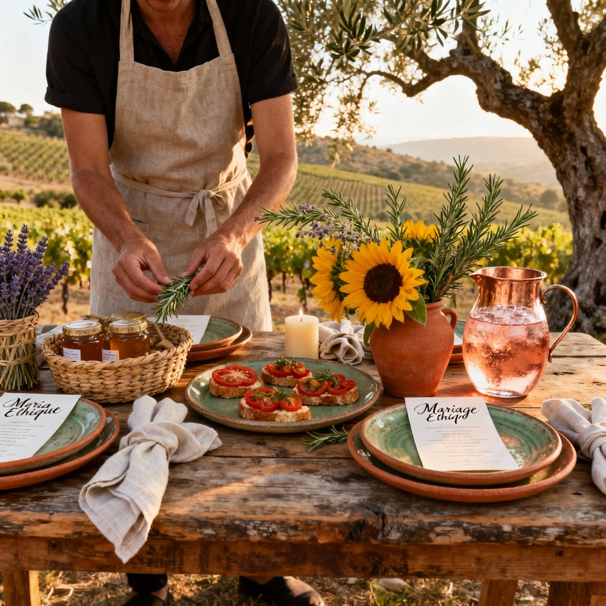

Le guide pour un mariage respectueux de l’environnement et de vos convictions
Organiser un mariage éthique ne se limite pas uniquement aux choix de décorations durables, de repas végétariens ou de tenues éco-responsables. Cela inclut également la sélection de prestataires qui partagent vos valeurs et qui adoptent des pratiques respectueuses de l’environnement, de l’éthique et du bien-être animal. Si vous êtes soucieux de l’impact de votre mariage sur la planète et la société, choisir des prestataires engagés est une étape clé de votre organisation. Mais comment s’assurer que ceux qui vous accompagnent, des fleuristes aux traiteurs, sont en accord avec votre démarche ? Voici quelques clés et conseils pour faire des choix en toute conscience.
1. Définir vos valeurs et priorités éthiques
Avant de commencer à rechercher des prestataires, il est essentiel de définir clairement ce que signifie un mariage éthique pour vous. Quelles sont les valeurs que vous souhaitez défendre ? Est-ce l’éco-responsabilité, la durabilité, le respect des animaux, le commerce équitable, ou encore la lutte pour l’égalité sociale ? Une fois vos priorités identifiées, ces points deviendront le fil rouge de votre organisation, du choix du lieu à la décoration, en passant par l’assiette.
2. Chercher des prestataires locaux et responsables
L’un des meilleurs moyens de réduire l’impact écologique de votre mariage est de choisir des prestataires locaux. Cela permet de réduire l’empreinte carbone liée aux transports tout en soutenant l’économie locale. Les prestataires locaux sont souvent plus investis dans la communauté et dans des pratiques durables. Recherchez des entreprises qui utilisent des produits locaux, biologiques, ou encore des techniques de production respectueuses de l’environnement.
3. Vérifier les certifications et les engagements des prestataires
De nombreux prestataires éthiques affichent fièrement leurs certifications ou leurs engagements envers l’environnement, le commerce équitable, ou les droits humains. Par exemple, un traiteur qui travaille avec des produits bio ou un fleuriste qui utilise des fleurs de saison, cultivées sans pesticides. Ne vous contentez pas de simples promesses, demandez des informations concrètes sur leurs pratiques et leurs certifications (par exemple, label bio, commerce équitable, etc.). Cela vous assurera de leur engagement véritable.
4. Opter pour des prestataires transparents sur leur chaîne d’approvisionnement
Un mariage éthique repose sur la transparence, que ce soit pour les produits utilisés, les matériaux employés ou la gestion des fournisseurs. Un prestataire éthique doit être transparent sur sa chaîne d’approvisionnement, qu’il s’agisse de la provenance des fleurs, des aliments, des tenues ou des accessoires. Demandez-leur comment ils s’approvisionnent, qui sont leurs fournisseurs et quelles sont leurs politiques en matière de durabilité et de respect des droits de l’homme.
5. Vérifier les pratiques en matière de bien-être animal
Si vous êtes sensibles au bien-être animal, il est important de vous assurer que vos prestataires respectent cette valeur. Par exemple, un traiteur engagé dans la cuisine végétarienne ou végétalienne contribuera à minimiser l’exploitation animale, tandis qu’un fleuriste qui privilégie les fleurs de saison et cultivées sans produits chimiques s’engage pour une culture plus respectueuse de l’environnement et des êtres vivants. Vérifiez également si les robes de mariée et accessoires sont fabriqués sans matériaux issus d’animaux, comme la soie ou la laine.
6. Rechercher des prestataires qui soutiennent des causes sociales
Les prestataires éthiques vont souvent au-delà de la simple durabilité environnementale. Beaucoup d’entre eux soutiennent également des causes sociales, comme l’égalité des genres, la lutte contre la pauvreté ou le soutien aux communautés marginalisées. Cela peut inclure le soutien aux artisans locaux, l’embauche de personnel issus de milieux défavorisés ou encore le financement de projets humanitaires. Choisir des prestataires qui ont un impact positif sur la société renforce la dimension éthique de votre mariage.
7. Demander des recommandations à d’autres couples éthiques
Un excellent moyen de trouver des prestataires éthiques est de demander des recommandations à des couples qui ont organisé des mariages éthiques ou à des communautés en ligne qui partagent vos valeurs. Il existe des groupes Facebook, des forums ou des blogs spécialisés dans les mariages éco-responsables et éthiques où vous pouvez trouver des avis et des conseils sur des prestataires qui respectent vos critères. Vous pouvez aussi demander conseil à des wedding planners spécialisés dans l’événementiel durable : ces réseaux sont précieux pour trouver des adresses de confiance et éviter le greenwashing. Pour me contacter, c’est sur cette page.

8. Collaborer avec des prestataires flexibles et ouverts à vos idées
Choisir un prestataire éthique ne signifie pas seulement qu’il respecte certains principes, mais aussi qu’il est ouvert à vos idées et à vos souhaits pour un mariage plus responsable. Certains prestataires sont plus flexibles que d’autres pour adapter leurs services aux valeurs éthiques de leurs clients. Par exemple, un photographe peut accepter de ne pas utiliser de plastique jetable pour ses accessoires ou un DJ peut s’engager à limiter sa consommation d’énergie en optant pour du matériel plus éco-responsable.
9. Éviter les prestataires qui ne sont pas à l’écoute de vos besoins éthiques
Si un prestataire ne semble pas comprendre ou ignorer vos préoccupations éthiques, il est peut-être préférable de chercher ailleurs. Un prestataire éthique doit être réceptif à vos valeurs et travailler avec vous pour les intégrer dans l’organisation de votre mariage. Si, lors de vos premières discussions, un prestataire minimise l’importance de l’éthique ou de la durabilité, cela peut être un signe qu’il ne correspond pas à vos attentes.
10. Ne pas négliger l’aspect humain du prestataire
Enfin, au-delà des valeurs éthiques, il est essentiel que vous vous sentiez en confiance avec vos prestataires. Un mariage est un moment précieux, et il est important de collaborer avec des professionnels qui respectent non seulement vos valeurs, mais aussi vos souhaits et votre vision. Assurez-vous que le prestataire soit à l’écoute, disponible et qu’il fasse preuve de bienveillance et de professionnalisme. Cela créera une atmosphère positive et agréable tout au long de l’organisation de votre mariage.
Choisir des prestataires alignés avec vos valeurs éthiques est l’une des étapes les plus importantes de l’organisation d’un mariage respectueux de l’environnement et des autres. Cela demande du temps et de la réflexion, mais cela permettra de créer un événement qui vous ressemble vraiment, tout en respectant vos engagements personnels. En sélectionnant des prestataires responsables, vous contribuez à un mariage plus durable et équitable, et vous inspirez vos invités à faire de même dans leurs propres choix.
Besoin d’être accompagné ? Contactez-moi pour découvrir mes adresses de prestataires engagés en Provence et organiser ensemble un mariage à votre image et respectueux de vos convictions.